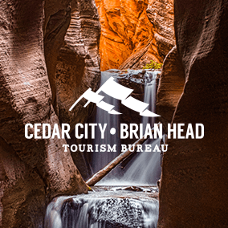
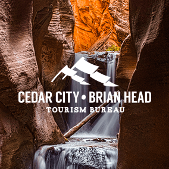
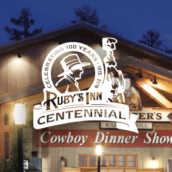
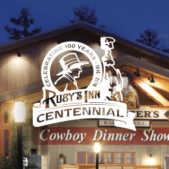

tourism
Industry Experts
Relic’s passion for tourism stems from our employees. Our well-traveled team has spent time everywhere from Russia to South America, which is why we’re passionate about the tourism industry. The world has many incredible sights to see, be they famous attractions or hidden treasures, and we want to showcase these places in a way that draws in new sightseers and keeps previous visitors coming back. Read More . . .
Relic’s team has been working in the tourism industry for years. In our experience, we’ve learned that most tourism organizations are often understaffed and have little time to complete massive amounts of work, which presents a bit of an issue. It’s like if we asked Kanye West to write a song about anyone other than himself. Could he do it? Most likely, but it would be a lot easier if he just focused on the one thing he loves.
Relic works with 10 different tourism-related organizations, meaning our team is up to speed on the latest trends, technologies and challenges facing the tourism industry. One of the biggest issues we’ve noticed in tourism is the lack of quantifiable success stemming directly from marketing efforts. While no companies completely bridged this gap, Relic’s top-of-the-line analytics tools will show exactly how successful tourism advertising can be.
The video below showcases our incredible experience with Tuacahn Amphitheatre. We’ve been working with Tuacahn for a long time and it has become one of our best success stories, proving that tourism marketing doesn’t have to be difficult. As we drive more visitors to your beautiful region, you’ll see that we’re truly worth our weight in gold. To learn more about Relic’s expertise in the tourism industry, watch the video below.
. . . Read Less
Tourism Clients
 


 



Tourism Awards
Uintah County
Tourism
Uintah County
Tourism
Garfield County
Tourism
Garfield County
Tourism
Uintah County
Tourism
Moab Area
Travel Council
Uintah County
Tourism
Garfield County
Tourism
Looking to bring more visitors to your area?